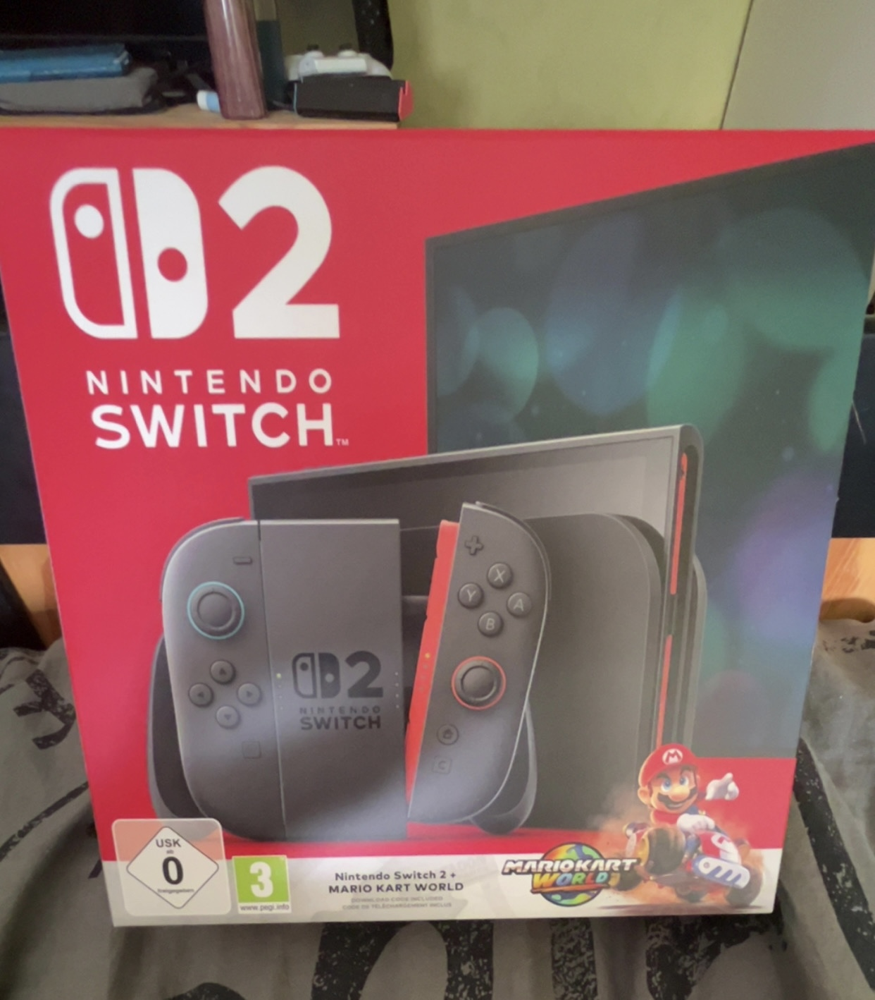
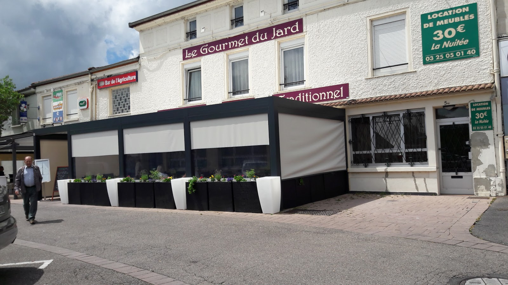
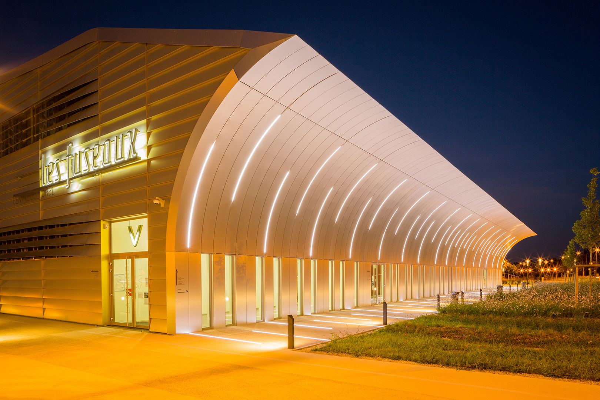
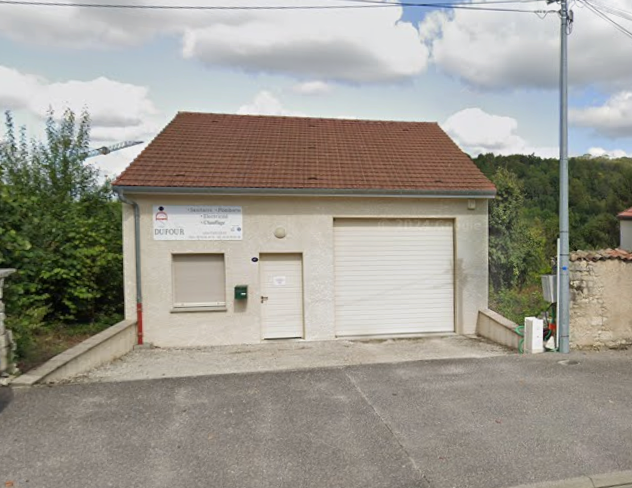
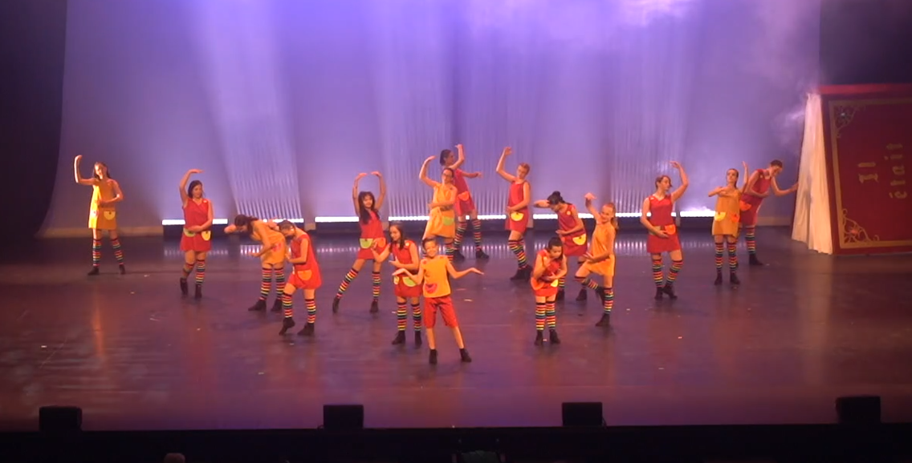
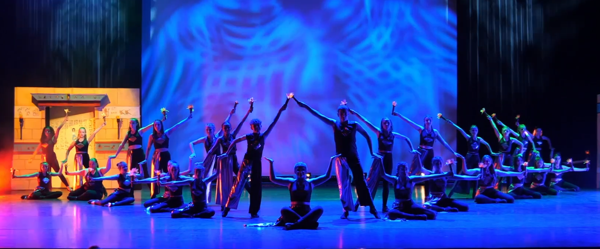
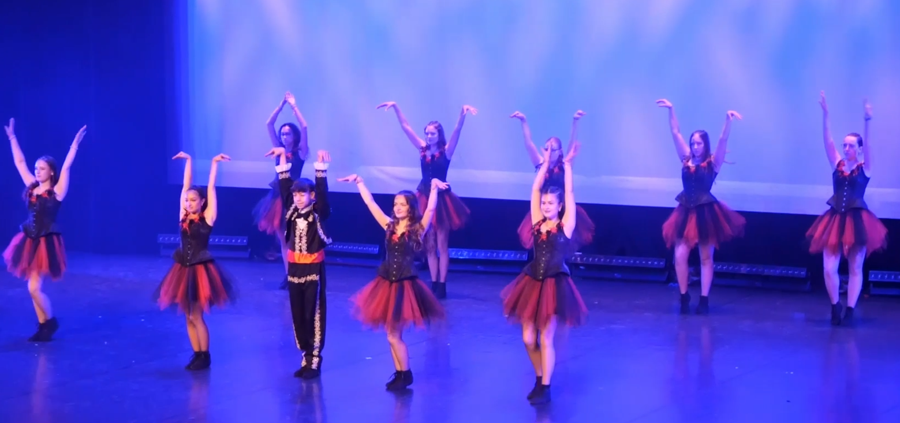
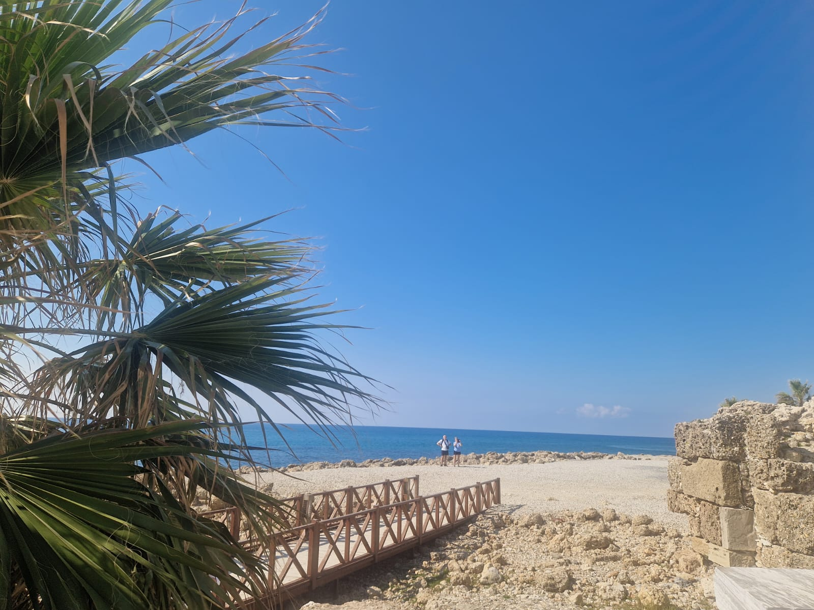
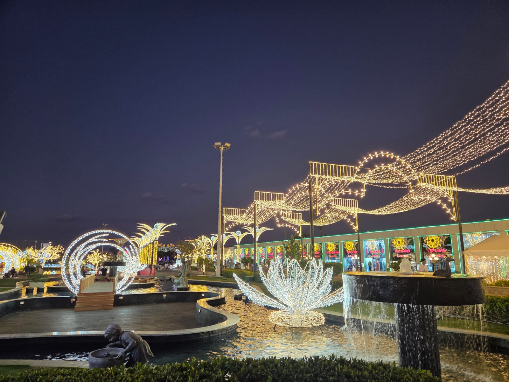
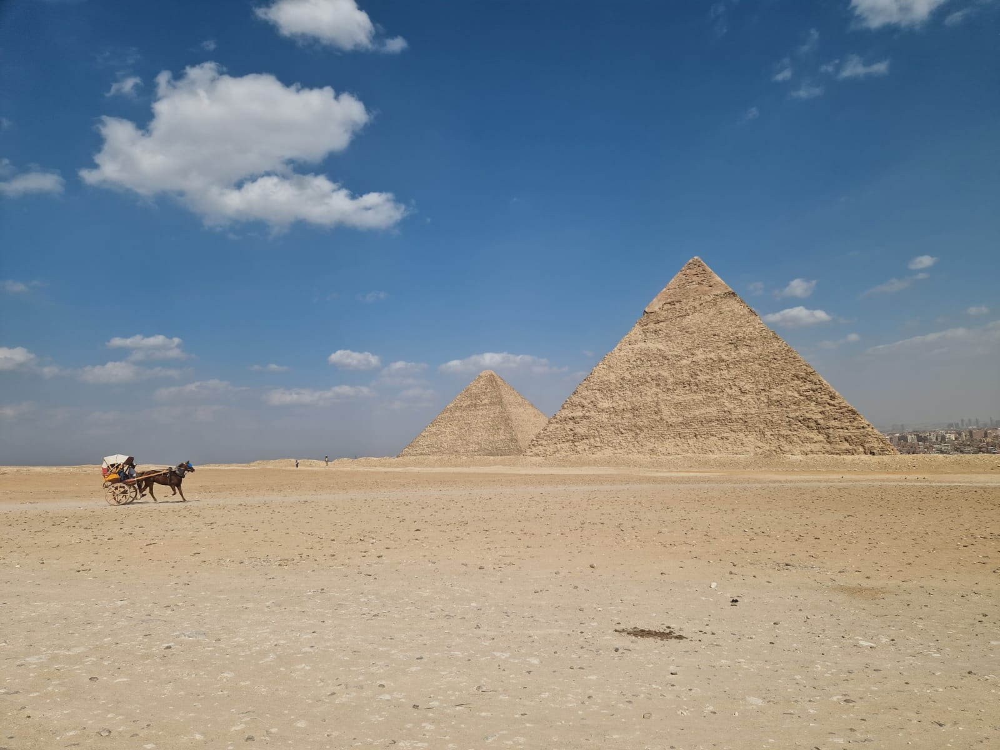

Je suis passionné par les jeux-vidéo


Je m'appelle Gabin, j'ai 17 ans, je vis à Saint-Dizier avec mes parents, mes soeurs (21 ans et 8 ans) et mon chien.
Je suis en terminale générale au lycée Saint-Exupéry, avec spécialités Mathématiques et N.S.I, ce qui me permet d'allier LOGIQUE et PROGRAMMATION.
Je suis passionné par la création numérique et visuelle et par le monde du multimédia.
Je suis créatif avec une âme d'artiste et j'aime aller à la découverte du monde.
Stage d'observation de Troisième au restaurant de Gourmet du Jard (Saint-Dizier)

Stage de Seconde aux 3 scènes (Fuseaux), en tant que régisseur/ingénieur son (Saint-Dizier)

Travail saisonnier chez un artisan électricien-plombier, Serge DUFOUR (Tréveray)

Je pratique le Modern Jazz (danse) depuis 10 ans.



Je pratique du théâtre d'improvisation depuis 3 ans.
Je pratique de nombreux sports, je fais partie de l'Association Sportive (A.S) de mon lycée.
Je suis passionné par les jeux-vidéo

Mes parents m'ont transmis le goût du voyage et de l'aventure. J'aime capturer ces souvenirs :




J'ai pu découvrir, notamment :
Voici un aperçu de mon premier site HTML :
Montages vidéo (Animé)
Montages vidéo de mes derniers voyages:
Montages photo de mes derniers voyages:


Avec des amis d'enfance, nous avons fait :
Un court-métrage

Une vidéo youtube d'un cache-cache géant.